At a glance
A pantry-first cooking app. Keep a live pantry, see which of about 9,000 recipes you can cook right now, fill the gaps with a smart shopping list, and cook hands-free with step-by-step Cook Mode.
Overview
People waste food and money because they don't know what to make with what's already in the kitchen. PantryChef starts from the pantry, not the recipe. It scores every recipe by how much of it you can already make, so "You can make now" and "Almost there" suggestions appear at the top.
The app combines camera-first input (barcode scanning and AI fridge photo scanning), AI recipe generation, meal planning and grocery tracking in one mobile experience. It spans three codebases:
- an Expo React Native mobile app (the primary product)
- a React/Vite web app
- a Cloudflare Worker + D1 backend
The problem
- Recipe apps start from recipes, but real life starts from ingredients that are about to expire.
- Typing in pantry contents is tedious, so most pantry apps get abandoned.
- Shopping lists, meal plans and recipes usually live in separate apps.
The solution
A single core loop:
add pantry items → see "You can make now" / "Almost there" → cook in Cook Mode → missing items go to the shopping list → bought items move back to the pantry
Camera-first input keeps setup to seconds, and AI fills the gaps when no catalog recipe fits.
Key features
Pantry
- Add, edit and delete items with auto-category inference, filters, search and swipe-to-delete
- Duplicate prevention and pantry diversity stats
- Barcode scanning via Open Food Facts, and AI fridge photo scanning
Recipes
- An approximately 9,000-recipe catalog with search, cuisine and dietary filters, and inferred difficulty
- A pantry match % on every recipe
- Recipe detail with servings scaling, have/missing ingredients, nutrition cards, and reviews and ratings
- Ingredient substitutions, seasonal suggestions, Recipe Roulette and a Leftover Finder
- Create a recipe, import from a URL, or generate a recipe with AI from what's on hand
Cooking
- Cook Mode: step-by-step instructions with keep-awake and text-to-speech
Planning & shopping
- A shopping list that adds missing ingredients and moves bought items back to the pantry
- A meal planner and a grocery spend tracker
Engagement
- Favorites, collections, challenges, a social feed, analytics, nutrition goals and local notifications
Account
- Email/password and Google sign-in, onboarding with pantry setup, dark theme and i18n scaffolding
How it works
The mobile app uses Firebase Auth and Firestore for user data, TanStack Query for server state, and Zustand for local state. A recipe engine computes a match score for each recipe against the user's pantry. AI features use Claude models for fridge-image recognition and recipe generation. A separate import pipeline normalised and deduplicated the recipe dataset into SQL batches.

Tech stack
| Layer | Technologies |
|---|---|
| Mobile | Expo SDK 54, React Native 0.81, React 19, TypeScript 5.9 |
| Navigation & state | React Navigation 7, Zustand 5, TanStack React Query 5, React Hook Form + Zod |
| Device features | expo-camera, image-picker, notifications, speech, keep-awake, haptics, secure-store |
| Mobile data | Firebase Auth, Firestore, Storage; Google sign-in |
| AI & data APIs | Anthropic Claude (Haiku 4.5) for fridge scan and recipe generation; Open Food Facts |
| Web | React 18, Vite 7, Tailwind, shadcn/ui, Framer Motion, Recharts, Tesseract.js OCR |
| Backend | Cloudflare Workers (TypeScript), D1 SQLite, Wrangler |
| Data pipeline | Recipe dataset import scripts (~9.7k raw → ~9k deduplicated, chunked SQL batches) |
| Testing (web) | Vitest, Playwright |
Engineering highlights
- A pantry-match recipe engine that scores about 9,000 recipes against a live pantry to power the "cook now" and "almost there" ranking.
- Camera-first input: barcode lookups plus AI vision fridge scanning, cutting pantry setup from minutes to seconds.
- 28 mobile screens, from onboarding and Cook Mode to meal planning, analytics and social.
- A three-surface architecture (mobile, web, edge backend), including a Cloudflare Worker REST API with auth, pantry, shopping, favorites, reviews and recipe search routes.
- A data engineering pipeline that deduplicated the recipe dataset, inferred difficulty and imported it in chunked SQL batches.
- Accessible cooking UX: text-to-speech steps, keep-awake and haptics for hands-busy moments.
Challenges & what I learned
- Ranking recipes by what you have. Approach: a match-score engine with have/missing breakdowns and "almost there" thresholds. Lesson: a simple, transparent score beats a clever but opaque one for everyday decisions.
- Reducing input friction. Approach: barcode scanning, AI fridge photos and auto-categorisation. Lesson: in consumer apps, setup effort decides retention.
- Porting from web to native. Approach: I used the complete web app as the reference implementation for the React Native build. Lesson: a reference implementation speeds up porting but needs a clear source of truth for data and APIs.
- Choosing the backend. Approach: I moved the mobile data layer to Firebase for auth and real-time sync, while the Worker serves the web app, and I'm now consolidating on one backend. Lesson: decide the data architecture early; two backends double the maintenance.
Status & what's next
A feature-rich MVP running in Expo development, now being hardened for release. Next steps:
- route all AI calls through a server-side proxy
- consolidate on one backend
- add automated mobile tests and crash reporting
- prepare EAS builds for store testing
Planned features include expiry-date reminders with "use it up" recipes, a shared household pantry, receipt scanning and an auto-generated weekly meal plan.